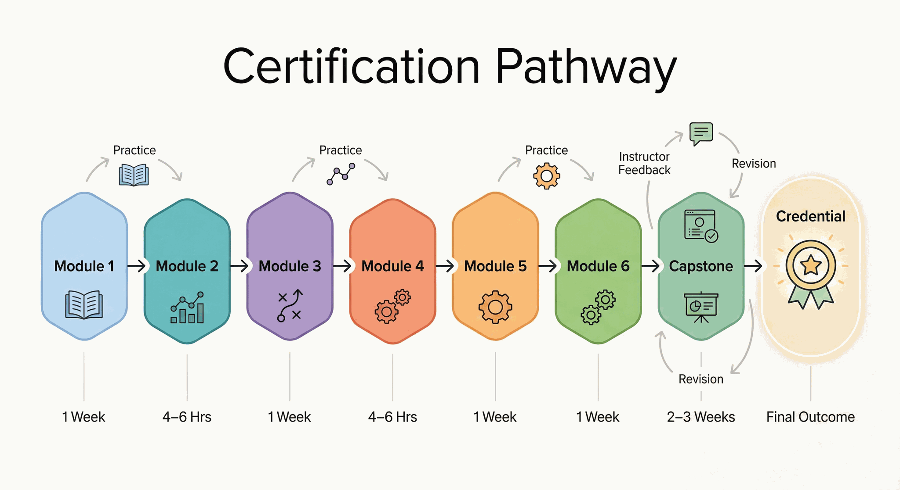
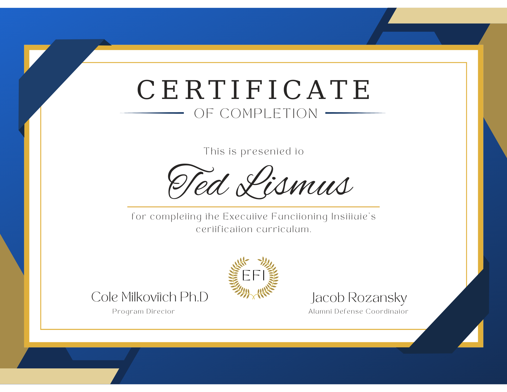
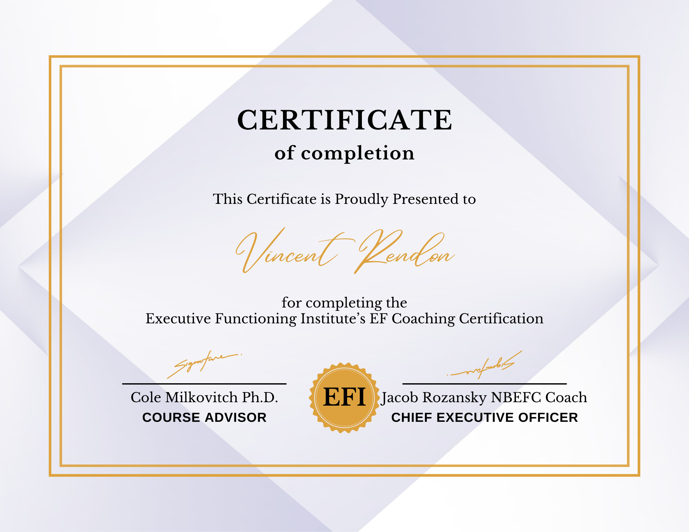

Professional Ethics & Practice Management
Operating within legal and ethical boundaries while building a sustainable, impactful coaching practice.
Module Overview
The final module ensures that graduates operate within legal and ethical boundaries and possess the business acumen to build a sustainable practice. Even the most skilled coach cannot help clients if they cannot attract them or manage the logistics.
The Path Forward
Completing this curriculum marks the start of practice development. The open-source model expects ongoing learning from new research, tools, and field feedback.

Professional Ethics & Scope of Practice
Aligning with the ICF and NBEFC codes of ethics.
ICF & NBEFC Alignment
The curriculum aligns with the International Coaching Federation (ICF) and National Board of Executive Function Certification (NBEFC) codes of ethics.
Coaches shall provide services only within the boundaries of their education, training, and experience. For example, referral to therapists for trauma or comorbidities is required when issues exceed the scope of EF coaching.
Information shared in coaching is strictly confidential unless there is an imminent risk of harm to self or others. With minor clients, the "Triangle of Trust" dictates what is shared with parents.
Coaches shall not make false claims regarding outcomes (e.g., "curing" ADHD). Marketing must be honest and evidence-based.
Coaches must disclose any financial interest in products or services recommended to clients.
Scope of Practice
Coaches must be trained to recognize red flags that require referral to clinical mental health professionals:
Referral Red Flags
- Severe depression or suicidal ideation
- Substance abuse or dependency
- Trauma responses (PTSD, complex trauma)
- Significant anxiety disorders requiring clinical intervention
- Eating disorders or self-harm behaviors
- Psychotic symptoms or severe thought disturbance
The Therapy Boundary
EF coaches must distinguish between "coaching for action" and "therapy for healing." If a client's procrastination is rooted in trauma or clinical depression, the ethical mandate is to refer.
Building Your Coaching Business
From niche specialization to pricing, marketing, and client acquisition.
Defining Your Niche & Value Proposition
The market for "Life Coaching" is saturated; the market for "Executive Functioning Coaching for [specific population]" is growing. Niche specialization allows for targeted marketing and higher fees.
Sell Outcomes, Not Sessions
The value is not "60 minutes of talking." The value is "A completed semester without academic probation" or "A peaceful household without fighting over homework."
Pricing & Packaging
Hourly billing is discouraged. It creates income instability and allows clients to quit when the work gets hard. The recommended model is the Package.
| Level | Model | Range |
|---|---|---|
| Entry Level | Per session | $100–$150 |
| Experienced | Per session | $200–$400+ |
| Premium | Monthly retainer | $1,500+/month |
| Recommended | 3-Month Package | Varies by niche |
Packages support the sustained engagement that skill development typically requires — most clients benefit from at least 3–6 months of consistent coaching.
Marketing & Client Acquisition
Referral Networks
The strongest referral source: neuropsychologists, psychiatrists, and pediatricians who diagnose ADHD/EF deficits but need reliable coaches for day-to-day implementation support.
Content Marketing
Providing value upfront. Create a "Lead Magnet" (e.g., "The ADHD College Packing List" or "5 Tools to Stop Procrastination") to build trust and capture email addresses.
The Discovery Call
A free 15–20 minute consultation. The goal is not to coach, but to assess fit. Use a script: "Tell me about your struggles. What would 'success' look like in 6 months?"
Open Digital Prosthetics and Assistive Tools
Contemporary EF practice now includes open and low-cost digital supports that help clients translate intention into action in real time.
Task Breakdown Tools
Tools like Goblin Tools and similar AI-assisted planners can rapidly convert overwhelming tasks into smaller, actionable steps. They are not replacements for coaching judgment, but useful external scaffolds.
Contextual Reminder Systems
Digital calendars, browser-based prompts, cue sheets, and workflow dashboards can act as the client's external working memory when used consistently and with low friction.
Ethical Use of AI Supports
Coaches must explain what a tool is doing, protect confidentiality, avoid overclaiming outcomes, and prevent clients from becoming dependent on opaque systems they do not understand.
Professional Standard
A modern practice should know which tools are helpful, which are distracting, and how to introduce digital supports as transparent prosthetics rather than magical fixes.
Legal & Administrative Infrastructure
The Coaching Agreement
A non-negotiable document that must cover:
- Scope: Definition of coaching vs. therapy
- Logistics: Cancellation policy (24-hour notice typically required)
- Payment: Terms and refund policies
- Confidentiality: Limitations (harm to self/others)
Professional Liability Insurance
Strongly recommended to protect against claims (e.g., a client blaming the coach for a failed class). This is a cost of doing business professionally.
Session Documentation
SOAP (Subjective, Objective, Assessment, Plan) note templates tailored for EF coaching ensure coaches document the specific "environmental modifications" and "skill strategies" used in each session.
Your Professional Toolkit
A distinguishing feature of the ExEF certification: a downloadable suite of professional assets to start your practice immediately.
Assessment & Intake
- Digital ESQ-R & Scoring Key
- Intake Script ("Air Traffic Control" metaphor)
- Parent/Student Interview Protocols
Intervention Tools
- "Get Ready, Do, Done" Planning Mats
- Time Horizon Visualizers
- "Wall of Awful" Worksheet
Practice Management
- Service Agreement Template
- SOAP Session Note Templates
- Coach's Client Dashboard
- Business Plan Template
Modern Tooling and Open Practice Infrastructure
Module 6 Assignment
Assignment 6.1: The "Launch Kit" Capstone
Objective: Build the actual assets needed to open a business.
Task: Create a professional "Launch Kit" containing:
- Business Plan: A one-page business plan defining your niche, target audience, pricing model, and revenue goals
- Service Menu: A one-page document describing your packages (e.g., "The Intensive," "The Maintenance Plan") with pricing and deliverables
- Client Agreement: A customized contract based on the ICF template, adapted for your specific niche
- Professional Bio: A 200-word bio establishing your authority and philosophy


Ready For Final Review?
Use the paid path for reviewed module completion, capstone eligibility, and the professional tools tied to the certification workflow.
See Certification Path